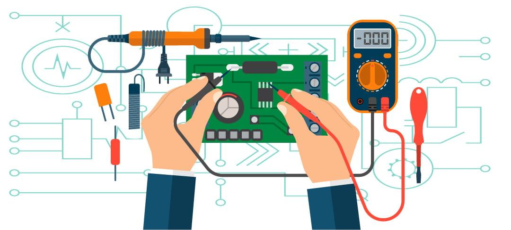

¿Tu circuito no funciona correctamente?
Puede incluir fallas como cortocircuitos, conexiones sueltas, componentes dañados o errores de diseño.
- ✔️Inspección visual: Buscar cables sueltos, rotos, quemados o componentes dañados, verificar que todo esté bien conectado.
- ✔️Revisar la fuente de energía:: Comprobar que la batería o la fuente esté funcionando correctamente.
- ✔️Probar los componentes: Cambiar focos, resistencias o interruptores sospechosos, usar componentes nuevos si es necesario.
- ✔️Usar herramientas de medición: Multímetro: mide voltaje, corriente y continuidad para saber si algo está desconectado o dañado.
- ✔️Revisar conexiones en serie y en paralelo: En serie: si un componente falla, todo el circuito se apaga, en paralelo: si algo falla, los otros componentes deben seguir funcionando.
Revisa como funciona cada tipo de circuito.
